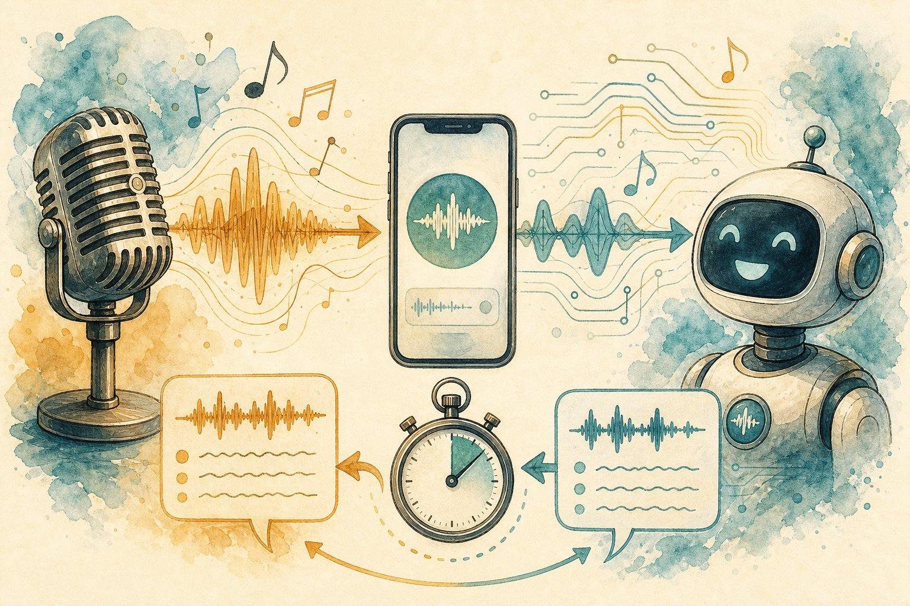

Voice agents & speech AI
Talking machines are back — this time they work. Learn the ASR → LLM → TTS loop, streaming tricks that kill latency, barge-in handling, and how to eval a voice your customers will trust.

Figure 52.1 — Speech in, speech out, under a second. Every millisecond of pipeline is UX.
1. The loop: ASR → brain → TTS
- VAD (voice activity detection): when did they stop? Too eager = interrupts; too slow = dead air. Tune per locale + background.
- ASR: streaming models (Whisper-streaming, Conformer) emit partials; low WER on accents/noise matters more than benchmarks on clean audio.
- TTS: neural voices (VITS, codec-LMs) with cloning; stream first chunk in <200 ms. Prosody > perfection for trust.
2. The hard parts aren’t the models
- Barge-in: user talks over the bot → stop TTS in <300 ms, keep context, respond to the interruption. Echo cancellation required.
- Turn-taking: backchannels (“hmm”, “got it”) while tools run; filler honesty (“checking your booking…”) beats silence.
- Telephony reality: 8 kHz audio, packet loss, IVR handoffs, DTMF (“press 1”), regulatory recording consent. Test on real calls, not laptop mics.
- Identity & fraud: voice cloning cuts both ways — authenticate callers (OTP, not “sounds like them”), watermark/sandbox your own cloned voices.
3. Evals for voice
| Metric | Target |
|---|---|
| Task completion (booking done?) | Primary — everything else is secondary |
| Ear-to-mouth latency p95 | < 1 s; < 800 ms feels human |
| Interruption handling | Recovers without losing state |
| WER on your accents/noise | Measure on your calls, not Librispeech |
| Containment + CSAT | Resolved without human, and liked it |
Voice pitfalls
Batch pipeline with 4 s latency (callers hang up) · no barge-in (rage-inducing) · testing only on clean mic audio · cloning voices without consent · no human-escalation path when tools fail mid-call.
Short notes
Loop: VAD → streaming ASR → LLM+tools → streaming TTS, <800 ms ear-to-mouth. Barge-in + turn-taking + telephony grit decide UX, not model size. Eval task completion, latency, interruptions, your-accent WER, containment. Consent for cloning; OTP for identity; always an escape to humans.
Point notes
- Stream every stage.
- VAD tunes interruptions.
- Barge-in < 300 ms.
- Test on real calls.
- Completion > WER.
MCQs
5 questions1. “Ear-to-mouth latency” in voice agents means:
2. Barge-in handling requires:
3. VAD tuned too aggressively causes:
4. Primary metric for a booking voice agent:
5. Caller authentication should use OTP rather than “sounds like them” because:
Practice questions
P1. Latency audit: ear-to-mouth is 3.2 s. Break down suspects and fixes per stage.
VAD endpointing (~800 ms: tune, use semantic endpointing) + ASR final-only (~700 ms: use partials, start LLM early) + LLM full-answer-then-speak (~1200 ms: stream tokens → stream TTS) + TTS first-chunk (~500 ms: smaller voice, edge inference). Fix order by measured ms; add “checking…” fillers only after real cuts. Target <800 ms p95.
P2. Design the test plan for a Hindi–English code-mixed support line.
Record real calls (consent): accents × noise (street, office) × code-mix ratios. Metrics: WER per slice, intent accuracy, task completion, barge-in recovery. Red-team: kids crying, cross-talk, low-signal 8kHz. Benchmark ASR candidates on THIS set, not Librispeech. Weekly regression on new call samples.
P3. Fraud team reports cloned-CEO voice scams via your TTS API. Your 4 controls?
(1) Consent + verification for custom voices (liveness-checked enrollment). (2) Watermark all synthetic audio + no-clone blocklist (public figures). (3) Rate limits + abuse monitoring (many short generations = scam pattern). (4) Takedown + disclosure process and caller-side guidance: voice is not identity — OTP always.